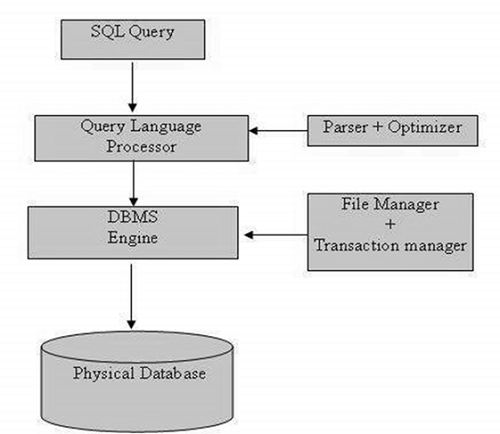

SQL Process
- When you are executing an SQL command for any RDBMS, the system determines the best way to carry out your request and SQL engine figures out how to interpret the task.
- There are various components included in this process
- Query Dispatcher
- Optimization Engines
- Classic Query Engine
- SQL Query Engine
- A classic query engine handles all the non-SQL queries, but a SQL query engine won't handle logical files.
- The following is a simple diagram showing the SQL Architecture
